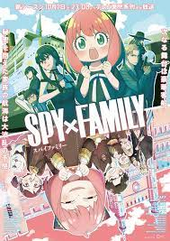

One piece

Gol D. Roger, aka the "Pirate King," was a notorious sailor who dominated the Grand Line.
The World Government's capture and subsequent execution of him caused a paradigm shift, as his famous last words revealed the existence of the world's most valuable treasure – One Piece.
This sparked the Grand Age of Pirates, with a new generation of seafarers seeking the treasure and the esteemed title of Pirate King. Amidst this new era, Monkey D. Luffy stands out as an unconventional pirate.
He isn't interested in the typical pirate life of violence and plunder. Instead, he craves adventure and excitement – discovering new places, meeting unique characters, and ultimately finding the legendary treasure.
Luffy and his crew set sail across the Grand Line, facing incredible challenges, solving cryptic puzzles, and battling powerful adversaries to uncover the coveted One Piece.
JUJUTSU KAISEN

"The right death" is what a boy fights for in the midst of the curses that plague our daily lives.
These curses are born from negative emotions like hardship, regret, and shame, and they can wreak havoc on people's lives, often resulting in death.
Ironically, the only way to banish these curses is by invoking another curse.
Itadori Yuji is an average high schooler with extraordinary physical abilities.
But when he consumes the finger of the Double-Faced Specter to save a friend from the Curses' wrath, he unwittingly makes himself a host to the curse.
Itadori shares a body with the Double-Faced Specter, and under the guidance of the powerful sorcerer Gojou Satoru, he enrolls in the Tokyo Metropolitan Technical High School of Sorcery.
There, he joins an organization committed to battling the Curses, and embarks on a heroic quest to exorcise the curse he carries.
But this quest comes at a steep price, for Itadori has become a curse himself, trapped in a life without any possibility of turning back.
Berserk of Gluttony
Fate Barbatos is no stranger to feeling powerless because of being born with the magical ability of Gluttony, which always leaves him unsatisfied.
He has faced constant ridicule and rejection in life due to this. Nonetheless, everything changes when he comes across the real power of Gluttony while working as a gatekeeper for a noble family and confronts a trespassing thief.
Fate realizes that by killing someone, he can absorb their abilities, finally satisfying his insatiable desire. With this newfound understanding, Fate becomes brave enough to pursue his maximum potential.
The question now is how many lives he will consume to satiate his hunger, and whether the world can withstand the fear-inspiring warrior he will transform into.
Shangri-La Frontier
Rakurou Hizutome, a sophomore in high school, has a singular obsession: uncovering "terrible games" and mastering them.
With unrivaled gaming abilities, he can find value in even the most abysmal titles.
When he hears about the latest virtual reality game, Shangri-La Frontier, Rakurou does what he does best: optimizes his play style and bypasses the introductory phase to jump right into the game.
However, with its concealed mysteries and challenges, can even a gaming genius like Rakurou unlock all of Shangri-La Frontier's secrets?
SPY x FAMILY Season 2

Everyone conceals a hidden side of themselves from the world, and this includes "Twilight," the most skilled spy employed by Westalis Intelligence Services.
The Eastern-Focused Division of the country has tasked Twilight with investigating Donovan Desmond, chairman of Ostania's National Unity Party, who threatens to undermine the peace talks between Ostania and Westalis.
The long-running cold war between both nations is seeking the upper hand, but Twilight's mission, called "Operation Strix," is crucial to winning the battle.
To infiltrate the social gatherings hosted by the elite school attended by Desmond's son, Twilight is required to assemble a family unit in under a week's time.
Playing the part of psychiatrist Loid Forger, Twilight starts his search for family members and quickly discovers that his adopted daughter Anya has telepathic abilities, while his wife Yor is an experienced assassin.
They understand that keeping their true identities hidden is necessary for the mission's success, and so they live together and exercise caution.
This unconventional family embarks on a new adventure packed with unforeseeable twists that will determine world peace's destiny.
The Eminence in Shadow
Minoru Kagenou has been obsessed with becoming as strong as possible for as long as he can remember.
He undergoes rigorous training not to gain recognition, but to blend into the crowd. By day, he pretends to be an unremarkable student.
However, at night, he arms himself with a crowbar and mercilessly crushes local biker gangs.
After a truck crash, Minoru believes his overwhelming powerlessness was something he couldn't overcome.
In another world where magic reigns, Minoru is reborn as Cid, the second child of the noble Kagenou family.
Finally, he has the power he has longed for. He dons the moniker "Shadow" and establishes Shadow Garden to fight the mysterious Cult of Diablos, an organization he envisioned. As Shadow Garden grows in size and influence, it becomes increasingly evident that the Cult of Diablos isn't entirely fictional as Cid had envisioned.
A Returner's Magic Should Be Special
Shadow Realms have ravaged the earth, leaving scarce survivors.
The responsibility of ensuring humanity's future now falls on the shoulders of only six mages, and among them is Desir Herrman, a pragmatic fighter.
These few heroic figures launch a final, daring mission to put an end to the ghastly conflict, but their attempts seem to be in vain.
As Desir braces himself to accept his inevitable fate, he suddenly wakes up to find himself catapulted back in time by thirteen years! With a second chance at hand, Desir is determined to retrieve his lost loved ones, reconnect with his companions, and ultimately save the world from its misery.
Ragna Crimson

In a realm dominated by dragons who reign over the sky, sea, and land, those who desire to defeat them must surpass the constraints of regular human might.
Determined to triumph at all costs, Ragna, a dragon slayer, allies with the enigmatic Crimson.
Although Crimson's intentions remain unclear, their objective is identical: to annihilate the dragon rulers.